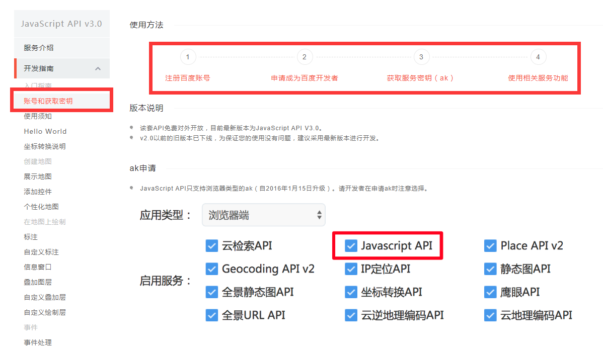
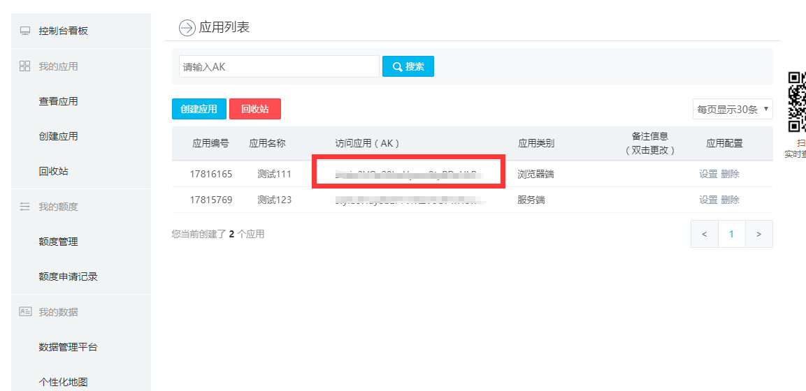
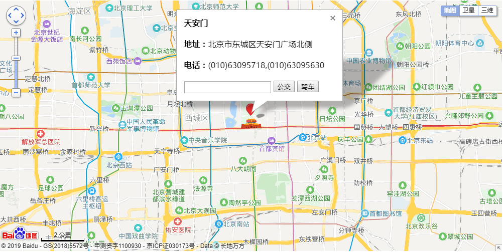

在网站开发过程中，经常会调用到地图，百度地图提供Web开发、Android开发、iOS开发API及SDK，百度地图JavaScript API可帮助您在网站中构建功能丰富、交互性强的地图应用，本篇博客简单介绍如何使用百度地图提供的JavaScript API调用百度地图。
百度地图开放平台地址：http://lbsyun.baidu.com/index.php?title=jspopular3.0
根据提示步骤操作，获取服务密钥


<script type="text/javascript" src="http://api.map.baidu.com/api?v=3.0&ak=您的密钥"></script><meta name="viewport" content="initial-scale=1.0, user-scalable=no" />
<script type="text/javascript">
$(function () {
var map = new BMap.Map("container");//创建地图实例
var point = new BMap.Point(116.403884, 39.914887);//设置中心点坐标
map.centerAndZoom(point, 13);//地图初始化，同时设置地图展示级别
map.enableScrollWheelZoom(true);//开启鼠标滚轮缩放
map.addControl(new BMap.NavigationControl());//添加平移缩放控件
map.addControl(new BMap.ScaleControl());//添加比例尺
map.addControl(new BMap.OverviewMapControl());//添加缩略地图
map.addControl(new BMap.MapTypeControl());//添加地图类型
var marker = new BMap.Marker(point); // 创建标注
map.addOverlay(marker);// 将标注添加到地图中
marker.setAnimation(BMAP_ANIMATION_BOUNCE); //标注跳动的动画
})
</script>
<script type="text/javascript">
$(function () {
//添加带检索功能的信息窗口
var licontent = "<b>天安门</b><br><br>";
licontent += "<span><strong>地址：</strong>北京市东城区天安门广场北侧</span><br><br>";
licontent += "<span><strong>电话：</strong>(010)63095718,(010)63095630</span><br><br>";
licontent += "<span class=\"input\"><strong></strong>";
licontent += "<input class=\"outset\" type =\"text\" name=\"origin\" />";
licontent += "<input class=\"outset-but\" type =\"button\" value=\"公交\" onclick=\"gotobaidu(1)\" />";
licontent += "<input class=\"outset-but\" type =\"button\" value=\"驾车\" onclick=\"gotobaidu(2)\"/>";
licontent += "<a class=\"gotob\" ";
licontent += "href =\"http://api.map.baidu.com/direction?destination=latlng:" + marker.getPosition().lat + "";
licontent += "," + marker.getPosition().lng + "|name:天安门" + "?ion=北京" + "&output=html\" ";
licontent += "target=\"_blank\"></a></span>";
var hiddeninput = "<input type=\"hidden\" value=\"" + '北京' + "\" name=\"region\" />";
hiddeninput += "<input type=\"hidden\" value=\"html\" name=\"output\" />";
hiddeninput += "<input type=\"hidden\" value=\"driving\" name=\"mode\" />";
hiddeninput += "<input type=\"hidden\" value=\"latlng:" + marker.getPosition().lat + "";
hiddeninput += "," + marker.getPosition().lng + "|name:天安门" + "\" name=\"destination\" />";
var content1 = "<form id=\"gotobaiduform\" action=\"http://api.map.baidu.com/direction\" ";
content1 += "target=\"_blank\" method=\"get\">" + licontent + hiddeninput + "</form>";
var opts1 = { width: 300 };
//创建信息窗实例
var infoWindow = new BMap.InfoWindow(content1, opts1);
//打开信息窗
marker.openInfoWindow(infoWindow);
marker.addEventListener('click', function () {
marker.openInfoWindow(infoWindow);
});
})
function gotobaidu(type) {
if ($.trim($("input[name=origin]").val()) == "") {
alert("请输入起点！");
return;
} else {
if (type == 1) {
$("input[name=mode]").val("transit");
$("#gotobaiduform")[0].submit();
} else if (type == 2) {
$("input[name=mode]").val("driving");
$("#gotobaiduform")[0].submit();
}
}
}
</script>
官方示例地址：http://lbsyun.baidu.com/index.php?title=uri/guide/helloworld
This request has been blocked; the content must be served over HTTPS.
Console提示：此请求已被阻止，内容必须通过HTTPS提供。
解决方法：添加meta标签，将HTTP的不安全请求升级为HTTPS
<meta http-equiv="Content-Security-Policy" content="upgrade-insecure-requests">更多常见问题请见官方文档：http://lbsyun.baidu.com/index.php?title=jspopular3.0/qa
End！